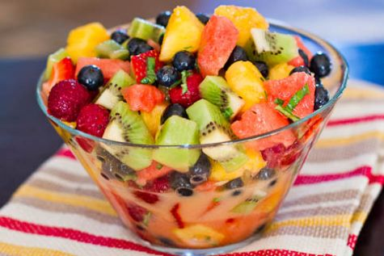

Ingrediente
Zahar vanilat
Fructe proaspete-1kg curatate
Coniac/Lichior/Visinata.... ce doriti-30-50 ml
Miere de albine sau zahar-50 g
Frisca/Inghetata de vanilie, iaurt-500g
Mod de preparare:
Fructele se curata de coaja si seminte, unde este cazul si se taie cubulete. Boabele de strugure se scot de pe ciorchine, se pun toate intr-un bol, se adauga vanilia, coniacul, zeama de lamaie (va impiedica oxidarea) si mierea sau zaharul. Se amesteca totul usor si se lasa la rece 20-30 de minute inainte de servire.